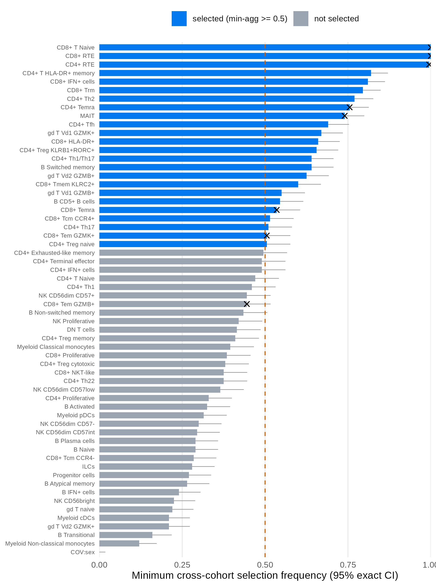
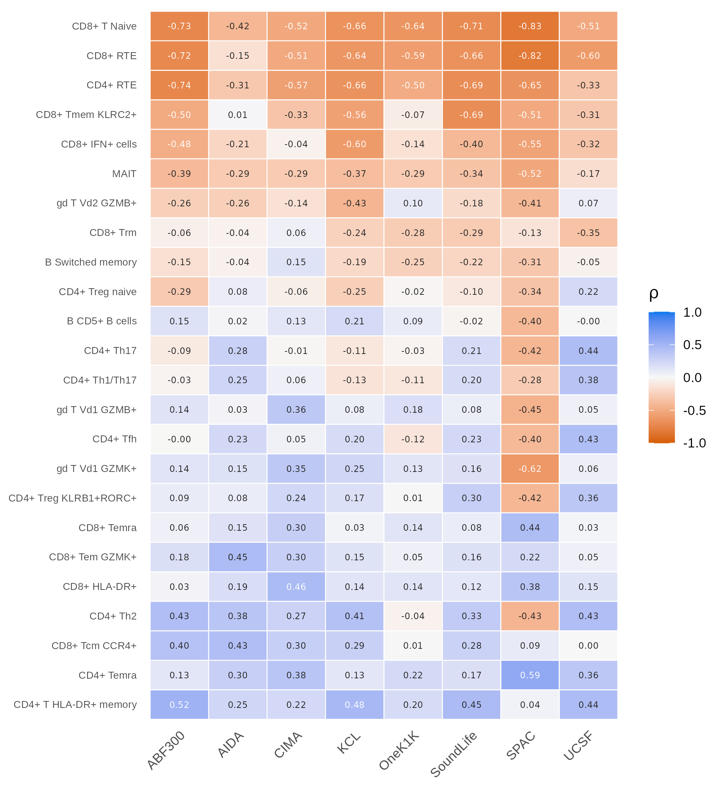
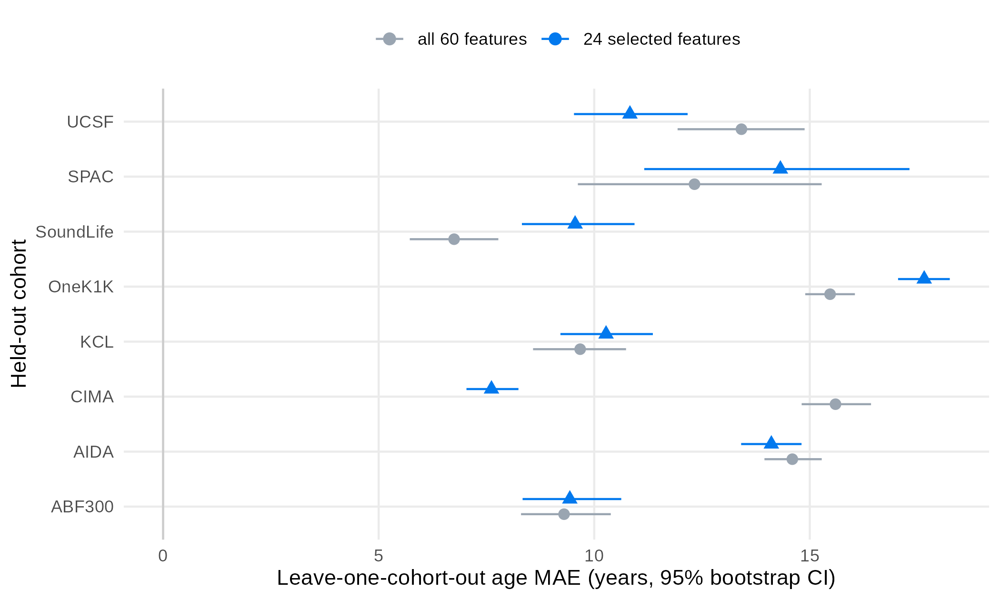
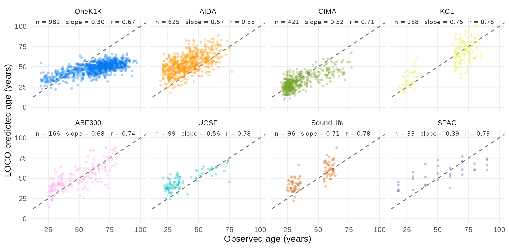

Case study: age-associated cell types across eight cohorts
Source:vignettes/stablr-aging-case-study.Rmd
stablr-aging-case-study.RmdSummary. We apply the
stablrenvironment-stability workflow to a public healthy-aging PBMC atlas (2,609 donors, eight scRNA-seq cohorts). The workflow selects 24 of 60 donor-level features whose association with age replicates in every cohort under a random-forest learner with model-X knockoff decoys. Seven of eight cell-type trends predeclared by the source publication pass the selection bar, all with sign-consistent correlations (exact sign-test p = 0.0078). Leave-one-cohort-out ridge models predict age with mean absolute error between 6.7 and 17.7 years depending on the held-out cohort. This vignette is an application case study. It is not calibration evidence for the method; the calibration evidence is simulation-based and cited in the method documentation.
Contents
- 1 Background and aims
- 2 Data
- 3 Statistical methods
- 4 Result: features that track age in every cohort
- 5 Result: age prediction on held-out cohorts
- 6 Discussion
- 7 Limits
- 8 Reproducibility
- References
1 Background and aims
A biomarker panel is useful only if it transports. A feature that
tracks age in one cohort may fail in the next because of cohort-specific
composition, preprocessing, or chance. The environment-stability
workflow in stablr addresses this by fitting the selection
procedure separately in each environment and keeping only features that
pass the bar in all of them.
This case study asks two questions of a real aging atlas:
- Which donor-level cell-type features associate with age in the same direction, and with replicable selection frequency, in all eight cohorts?
- Do the selected features predict age in a cohort that the model never saw?
The analysis ran once with a fixed seed. The full script is
inst/benchmarks/ws8_aging_showcase.R in the package source;
the figures and statistics tables are regenerated by
inst/benchmarks/ws8_figures.R. The pipeline takes about 15
minutes, so this vignette presents the saved results instead of
recomputing them.
2 Data
2.1 Source and availability
The data come from a public healthy-aging PBMC atlas of eight
scRNA-seq cohorts (Terekhova et al. 2026, Immunity),
distributed through the Artyomov lab single-cell portal (dataset
pan_atlas_healthy_aging_all_celtypes). We downloaded the
per-cell annotation table (all_cells_metadata.csv.gz,
13,137,776 cells; MD5 50651968855bf6ca3efcdf199e2a9fd5;
retrieved 2026-10-13). The table carries one row per cell with donor id,
age, sex, CMV status, ancestry, cohort, and cell-type annotation.
2.2 Cohorts
| Cohort | Donors |
|---|---|
| OneK1K | 981 |
| AIDA | 625 |
| CIMA | 421 |
| KCL | 188 |
| ABF300 | 166 |
| UCSF | 99 |
| SoundLife | 96 |
| SPAC | 33 |
| Total | 2609 |
The cohorts differ in size (33 to 981 donors), ancestry mix, and age range. Cohort identity is the largest variance component of the atlas (Terekhova et al. 2026), which makes it the right stress test for transportability.
2.3 Donor-level feature construction
Each donor is one sample. For each donor and cell type c we compute the add-half smoothed proportion \tilde p_c = (n_c + 0.5)/(N + 0.5), where n_c is the donor’s cell count for type c and N the donor’s total typed cells, and use the logit transform \log\{\tilde p_c/(1-\tilde p_c)\} as the feature. This gives 59 cell-type features. One covariate (sex, coded Female = 1) joins the panel. Three covariate columns (CMV status and two ancestry indicators) are constant inside at least one cohort, so the analysis drops them: a column that is constant inside a cohort has no within-cohort signal, and its zero variance makes the equicorrelated knockoff construction numerically infeasible. No cell-type feature is constant in any cohort. The final panel has 60 features. The outcome is donor age in years; the environments are the eight cohorts.
3 Statistical methods
3.1 Selection procedure
For each cohort separately,
stabl_environment_stability() runs the STABL procedure
(Hédou et al. 2024): 200 bootstrap resamples, a random-forest learner
(ranger, 500 trees, permutation importance), and model-X
equicorrelated knockoff artificial features injected at a 1:1 ratio. At
each bootstrap iteration the learner is fit on the real features plus
decoys, and a feature’s per-iteration mask is the set of penalty
thresholds at which its importance beats the FDP+ threshold calibrated
against the decoys. The per-cohort stability score of a feature is its
selection frequency (max-over-lambda) across the 200 bootstraps.
A feature is consistent when its minimum score
across the eight cohorts is at least 0.5 (the min-agg rule): it
must be selected in more than half of the bootstraps of every cohort.
The min-agg rule is the calibrated aggregation in the WS-5 simulation
study (FDP+ 0.083–0.142 across shift and drift designs; see
?stabl_environment_stability).
3.2 Uncertainty and sign consistency
The per-cohort score is a binomial frequency over 200 bootstraps. For each feature we report the exact (Clopper–Pearson) 95% interval of the binding cohort — the cohort that attains the minimum score. This interval is a conservative uncertainty band for the min-agg score.
Directional replicability is tested with an exact two-sided sign test: for a feature whose correlation with age shares one sign in k of 8 cohorts, p = 2\sum_{j=k}^{8}\binom{8}{j}2^{-8}; k = 8 gives p = 0.0078.
3.3 Sensitivity analysis
The primary analysis uses the random-forest learner because the WS-2
simulation calibrated it for gaussian problems with up to a few dozen
predictors (mean FDP+ 0.025 linear / 0.065 nonlinear; see
?make_ranger_adapter). As sensitivity analysis we repeat
the full workflow with the lasso learner, same knockoff type, bootstrap
count, and seed. The lasso is anti-conservative in some regimes (WS-2:
FDP+ 0.58 at p = 50), so its selection is read as a directional check,
not a primary result.
3.4 Age prediction
We use leave-one-cohort-out (LOCO) evaluation. Each fold trains a
ridge regression (glmnet, alpha = 0, 5-fold internal CV for
the penalty) on seven cohorts and predicts donor age in the eighth. We
evaluate two models: ridge on all 60 features, and ridge on the 24
consistent features. We report per-cohort mean absolute error (MAE) with
95% bootstrap intervals (2,000 donor-level resamples within the held-out
cohort), plus the calibration slope and Pearson correlation of predicted
versus observed age.
4 Result: features that track age in every cohort
The min-agg rule selects 24 of the 60 features. Figure 1 ranks all features by their minimum cross-cohort selection frequency, with the exact 95% interval of the binding cohort. The dashed line is the 0.5 bar. Crosses mark the eight features that the source publication predeclared as age-associated.

Table 1 lists the eight predeclared features with their statistics. Seven of eight pass the bar. The near-miss, CD8+ Tem GZMB+, has a min-agg score of 0.445 with an interval that includes 0.5 — the data cannot distinguish it from the bar, and the predeclared rule does not select it.
Table 1: Predeclared features under the min-agg rule. rho is the mean Spearman correlation with age across cohorts; the interval is the exact 95% Clopper–Pearson interval of the binding cohort’s selection frequency; the sign test is exact and two-sided (k = 8 for all rows).
| Feature | min-agg score | 95% CI | mean rho | sign test | Selected |
|---|---|---|---|---|---|
| CD8+ T Naive | 1.000 | [0.98, 1.00] | −0.63 | p = 0.0078 | yes |
| CD8+ RTE | 1.000 | [0.98, 1.00] | −0.59 | p = 0.0078 | yes |
| CD4+ RTE | 0.995 | [0.97, 1.00] | −0.55 | p = 0.0078 | yes |
| CD4+ Temra | 0.755 | [0.69, 0.81] | +0.28 | p = 0.0078 | yes |
| MAIT | 0.740 | [0.67, 0.80] | −0.33 | p = 0.0078 | yes |
| CD8+ Temra | 0.535 | [0.46, 0.61] | +0.15 | p = 0.0078 | yes |
| CD8+ Tem GZMK+ | 0.505 | [0.43, 0.58] | +0.19 | p = 0.0078 | yes |
| CD8+ Tem GZMB+ | 0.445 | [0.37, 0.52] | +0.23 | p = 0.0078 | no |
All eight directions agree with the source publication: the naive and recent-thymic-emigrant compartments (CD8+/CD4+ RTE, CD8+ T Naive) and MAIT fall with age; the terminal-effector compartments (CD4+/CD8+ Temra, CD8+ Tem GZMK+/GZMB+) rise with age.
Figure 2 shows the per-cohort Spearman correlation of the 24 selected features. Three observations matter. First, the top rows (CD8+ T Naive, CD8+/CD4+ RTE, MAIT) are sign-consistent and moderately strong everywhere (rho between −0.15 and −0.83). Second, the bottom rows pass the selection bar with weak or cohort-mixed correlations; only 11 of the 24 selected features reach sign-test significance at 0.05, so the panel separates into a strongly replicable core and a weaker periphery. Third, SPAC (n = 33) flips the sign of several weak features (for example gd T Vd1 GZMK+, −0.62 in SPAC against +0.35 in CIMA); small cohorts dominate the sign pattern of weak rows.

The lasso sensitivity analysis selects 6 features under the same rule (CD8+ IFN+ cells, CD8+ NKT-like, CD8+ T Naive, gd T Vd1 GZMK+, Myeloid pDCs, NK CD56dim CD57−). CD8+ T Naive is the only feature that both learners select. The agreement is partial: the lasso check supports the direction of the primary result but does not reproduce the full 24-feature panel.
5 Result: age prediction on held-out cohorts
Table 2 and Figure 3 give the LOCO results. The all-feature ridge model predicts age with MAE between 6.7 years (SoundLife) and 15.6 years (CIMA). The selected-feature model improves two cohorts clearly (CIMA 15.6 to 7.6 years; UCSF 13.4 to 10.8 years), degrades others (OneK1K 15.5 to 17.7 years; SoundLife 6.7 to 9.6 years), and leaves the rest within overlapping intervals. The overall means (12.1 years all features, 11.7 years selected) hide this heterogeneity and should not be read as a uniform improvement.
Table 2: LOCO age prediction. MAE in years with 95% bootstrap intervals (2,000 donor resamples within the held-out cohort).
| Cohort | n | MAE all (95% CI) | MAE selected (95% CI) |
|---|---|---|---|
| ABF300 | 166 | 9.30 [8.30, 10.38] | 9.43 [8.34, 10.63] |
| AIDA | 625 | 14.60 [13.95, 15.28] | 14.11 [13.41, 14.81] |
| CIMA | 421 | 15.60 [14.81, 16.42] | 7.62 [7.04, 8.24] |
| KCL | 188 | 9.67 [8.58, 10.74] | 10.27 [9.22, 11.36] |
| OneK1K | 981 | 15.47 [14.89, 16.05] | 17.65 [17.05, 18.25] |
| SoundLife | 96 | 6.75 [5.72, 7.78] | 9.56 [8.32, 10.94] |
| SPAC | 33 | 12.33 [9.62, 15.28] | 14.32 [11.16, 17.31] |
| UCSF | 99 | 13.41 [11.93, 14.88] | 10.83 [9.53, 12.17] |

Figure 4 shows predicted versus observed age for the selected-feature model. Correlation is satisfactory in every cohort (r between 0.58 and 0.78), but every calibration slope is below 1 (0.30 to 0.75): predictions shrink toward the training range. The shrinkage is worst in OneK1K (slope 0.30), the largest cohort with the widest age range, and mildest in KCL and SoundLife (0.71 to 0.75). The source publication reports 8.2 years test MAE for its trained clock. Our protocol is deliberately simpler and different — a ridge model on donor-level proportions, trained on seven cohorts and applied to the eighth — so the two numbers are not directly comparable. The honest reading is that composition features alone carry cross-cohort age signal with good ranking quality (r up to 0.78) but cohort-specific calibration loss.

6 Discussion
Three findings generalize beyond this atlas.
First, the strongly replicable core is small. Five features (CD8+ T Naive, CD8+ RTE, CD4+ RTE, CD4+ Temra, MAIT) combine near-1 selection frequencies in every cohort with sign-consistent, moderate correlations. This matches the publication’s biology: thymic involution and T-cell compartment restructuring are the most reproducible immune-aging signatures.
Second, selection frequency and effect size are different quantities. The min-agg bar asks for replicable selection, not for a large or even sign-stable correlation. Eleven of the 24 selected features have weak or cohort-mixed correlations. A user who needs a compact panel can read Figure 2 and take the strongly replicable core; a user who needs coverage of the full selection set should treat the periphery as hypotheses.
Third, prediction quality is cohort-specific. The selected panel halves the error in CIMA and clearly helps UCSF, but hurts OneK1K and SoundLife. With cohort identity as the largest variance component, no composition-only model will calibrate uniformly; the LOCO design makes that cost visible instead of hiding it inside a pooled metric.
7 Limits
Four limits bound the conclusions.
- Application case study, not calibration evidence. The calibration evidence for the random-forest learner is simulation-based (WS-2) and covers gaussian problems with up to a few dozen predictors. This panel has 60 features. The showcase demonstrates the workflow on real data; it does not add calibration guarantees.
- The min-agg rule is conservative by design. Features with cohort-specific signal fail the bar even when their biology is real. CD8+ Tem GZMB+ (score 0.445) is the predeclared example.
- Composition features are relative. Logit proportions measure a cell type against all typed cells; an increase in one compartment mechanically dilutes others. Directional claims are about composition, not absolute abundance.
- Single run. The analysis uses one seed (20261013). The bootstrap intervals quantify sampling noise within that run; they do not cover seed-level variation of the full pipeline.
8 Reproducibility
- Data: Artyomov lab single-cell portal, dataset
pan_atlas_healthy_aging_all_celtypes, fileall_cells_metadata.csv.gz(MD550651968855bf6ca3efcdf199e2a9fd5, retrieved 2026-10-13). - Pipeline:
inst/benchmarks/ws8_aging_showcase.R(design predeclared ininst/benchmarks/ws8_showcase_predesign.md; seed 20261013). - Figures and statistics:
inst/benchmarks/ws8_figures.R; outputs ininst/benchmarks/ws8_feature_stats.csv,ws8_loco_mae_ci.csv,ws8_loco_calibration.csv, andvignettes/figures/. - Software: R 4.4.2;
stablr0.3.0 (this branch);ranger,glmnet,knockoff.
References
- Terekhova et al. (2026), Immunity. Healthy-aging PBMC atlas across eight cohorts; source of the data and of the predeclared feature list.
- Hédou, J., Marić, I., Bellan, G. et al. Discovery of sparse, reliable omic biomarkers with Stabl. Nat Biotechnol (2024). doi:10.1038/s41587-023-02033-x
- Candès, E., Fan, Y., Janson, L. & Jin, J. (2018). Panning for gold: model-X knockoffs. J R Stat Soc B, 80(3), 551–577. doi:10.1111/rssb.12265